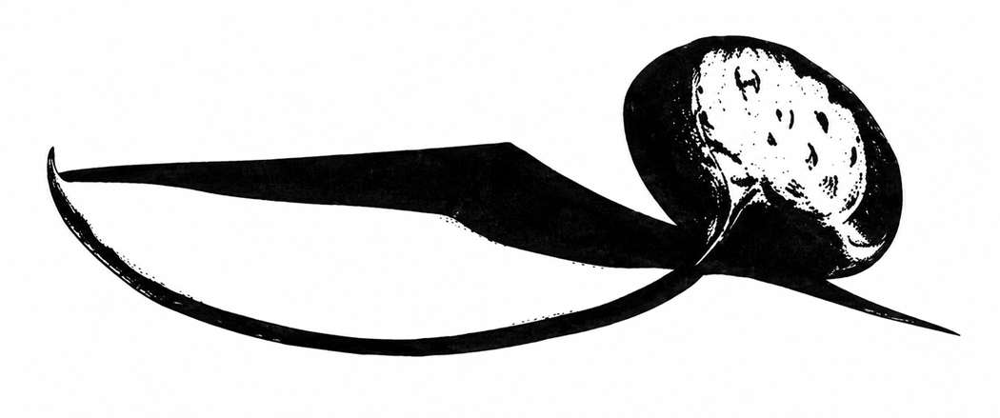

蝠鲼 · Manta Ray

| 项目 | 数据 |
|---|---|
| 出现频率 | 不常见 |
| 出现数量 | 1 |
| 护甲等级 | 6 |
| 移动力 | 18 寸 |
| 生命骰 | 8–11 |
| 在巢穴概率 | 0% |
| 财宝类型 | J–N（×10）、O（×5）、X |
| 攻击次数 | 1 次咬噬、1 次尾刺 |
| 攻击伤害 | 3–12／2–20 |
| 特殊攻击 | 见下文 |
| 特殊防御 | 无 |
| 魔法抗性 | 标准 |
| 智力 | 非智能 |
| 阵营 | 中立 |
| 体型 | L |
| 灵能能力 | 无 |
这些巨型生物在温暖的海水中如同“飞行”般游动，寻找猎物。小型个体翼展约 32 尺，最大的可达 44 尺。它们常伏在海底，体色与海床融为一体，等待猎物经过。蝠鲼张开巨口（口部约为体宽的四分之一）吞噬非巨型生物；若命中检定结果比所需数值高出 10%（即高出 2 点），便可将能塞入口中的猎物整只吞下。被吞下的生物会在 6 个战斗轮后死亡；其可从内部攻击蝠鲼，蝠鲼的护甲等级不变，但每过一轮伤害累计 −1，最后一轮为 −6。
蝠鲼还有一根强力尾刺，命中造成 2–20 点伤害；目标若未通过麻痹豁免，会因冲击昏迷 2–8 个战斗轮。尾刺只在蝠鲼受到严重威胁时使用，且目标必须位于其后方四分之一范围内。蝠鲼的胃中会保存无法消化的物品，例如其财宝类型所示的财宝。